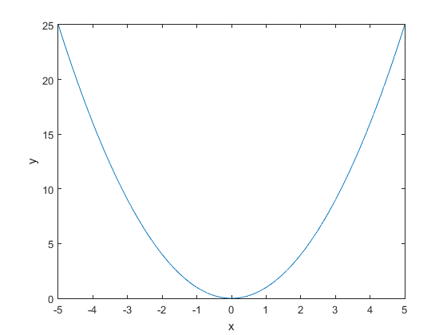

Lab 1 Creating a script and publishing a report
This is the script created during the lab demonstration. The demonstration showed you how to create script, add comments to the script, use cell mode in a script, and publish a script to an HTML report.
Contents
Question 1
The radius of the earth is approximately 6.37 * 10^6 meters. (a) What is the circumference of the earth in kilometers? (b) What is the surface area of the earth in square kilometers? (C) What is the volume of the earth in cubic meters?
Question 1A
radius of the earth in metres
radius = 6.37e6;
% circumference in kilometres
circum = 2 * pi * radius / 1000
circum = 4.0024e+04
Question 1B
surface area in square kilometres
area = 4 * pi * (radius/1000)^2
area = 5.0990e+08
Question 1C
%volume in cubic metres
volume = 4/3 * pi * (radius/1000)^3
volume = 1.0827e+12
Question 2
Plot the function y = x^2 for values
%x = -5:0.1:5 % Label the x and y axes. x = -5:0.1:5; y = x.^2; plot(x, y) xlabel('x'); ylabel('y');